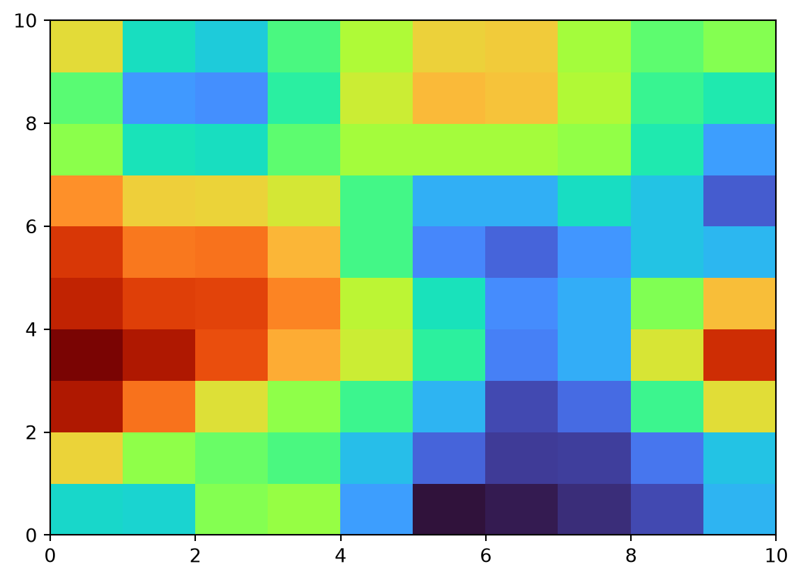
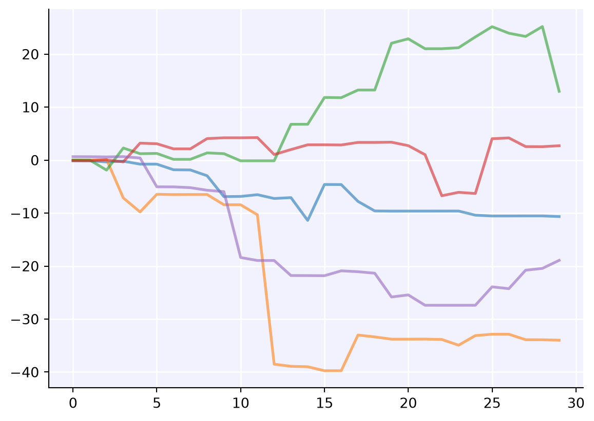

import sciris as sc
import numpy as np
import matplotlib.pyplot as plt
sc.options(jupyter=True) # To make plots nicer
class Sim:
def __init__(self, days, trials):
self.days = days
self.trials = trials
def run(self):
self.x = np.arange(self.days)
self.y = np.cumsum(np.random.randn(self.days, self.trials)**3, axis=0)
def plot(self):
with plt.style.context('sciris.fancy'):
plt.plot(self.x, self.y, alpha=0.6)Files and versioning
Unless you’re a string theorist, at some point you’re probably going to want to save and load some data. This tutorial covers some of Sciris’ tools for doing that more easily.
Warning
The tools here are powerful, which also makes them dangerous. Unless it’s in a simple text format like JSON or CSV, loading a data file can run arbitrary code on your computer, just like running a Python script can. If you wouldn’t run a Python file from a particular source, don’t open a data file from that source either.
Files
Saving and loading literally anything
Let’s assume you’re mostly just saving and loading files you’ve created yourself or from trusted colleagues, not opening email attachments from the branch of the local mafia. Then everything here is absolutely fine.
Let’s revisit our sim from the first tutorial:
Now let’s run it, save it, reload it, and keep working with the reloaded version:
# Run and save
sim = Sim(days=30, trials=5)
sim.run()
sc.save('my-sim.obj', sim) # Save any Python object to disk
# Load and plot
new_sim = sc.load('my-sim.obj') # Load any Python object
new_sim.plot()
We can create any object, save it, then reload it from disk and it works just like new – even calling methods works! What’s happening here? Under the hood, sc.save() saves the object as a gzipped (compressed) pickle (byte stream). Pickles are how Python sends objects internally, so can handle almost anything. (For the few corner cases that pickle can’t handle, sc.save() falls back on dill, which really can handle everything.)
There are also other compression options than gzip (zstandard or no compression), but you probably don’t need to worry about these. (If you really care about performance, then sc.zsave(), which uses zstandard by default, is slightly faster than sc.save() – but regardless of how a file was saved you can load it with sc.load().
Saving and loading JSON
While sc.save() and sc.load() are great for many things, they aren’t great for just sharing data. First, they’re not compatible with anything other than Sciris, so if you try to share one of those files with, say, an R user, they won’t be able to open them.
If you just have data and don’t need to save custom objects, you should save just the data. If you want to save to CSV or Excel (i.e., data that looks like a spreadsheet), you should convert it to a dataframe (df = sc.dataframe(data)), then save it from there (df.to_excel() and df.to_csv(), respectively).
But if you want to save data that’s a little more complex, you should consider JSON: it’s fast, it’s easy for humans to read, and absolutely everything loads it. While typically a JSON maps onto a Python dict, Sciris will take pretty much any object and save out the JSONifiable parts of it:
# Try saving our sim as a JSON
sc.savejson('my-sim.json', sim)
# Load it as a JSON
sim_json = sc.loadjson('my-sim.json')
print(sim_json){'python_class': "<class '__main__.Sim'>", 'days': 30, 'trials': 5, 'x': [0, 1, 2, 3, 4, 5, 6, 7, 8, 9, 10, 11, 12, 13, 14, 15, 16, 17, 18, 19, 20, 21, 22, 23, 24, 25, 26, 27, 28, 29], 'y': [[0.5504674281769969, -4.489045448758656, -1.3006919171055895, -0.9907858075369734, 0.24514617848601913], [-1.4424431718718322, -4.154775438493111, -1.0656614996318299, 0.4416866375392773, -0.4170085837716153], [-3.5174746059343565, -2.9561360139155677, -8.685244316706799, 0.4416872838542742, 1.3046186892810543], [-3.5091260941408935, -6.405562300620904, -8.685746158860075, 0.12691783542286866, -0.756250705004389], [-3.5086320082116633, -8.503103305067597, -7.9878385143870805, 0.08581672735918852, -1.9044719914416406], [-3.4056164850097184, -9.83461930846863, -11.708127219024497, 6.914104264346631, -2.7099187580347115], [-3.4725013605823216, -8.062148151225543, -16.55208327167413, 6.922362405859248, -1.6939145390333326], [-3.472503016616348, -9.531596356086885, -17.475867687990196, 6.922099477207608, -1.7740097315745338], [-3.5698420421010013, -9.522126579444848, -17.473443825422848, 6.965925863599017, -1.8274981616064558], [-3.5348427219236727, -9.520036946316182, -17.465657993497565, -5.346802743139266, -1.5525798139439568], [0.9579606322880685, -9.536008294749715, -17.438547481249078, -5.338378699507509, -1.5434297823576815], [-18.204814099327116, -9.701069231114097, -16.760481995873242, -5.342699697241041, -1.2336765692900107], [-18.52131458715318, -9.777051712522262, -16.731120714746538, -4.160866289204525, -1.9617005336828897], [-19.12585842908585, -9.797187943804053, -22.29401757923362, -4.045132132989276, -0.06834148687177444], [-15.640420566247977, -9.798139630306528, -22.29050939601327, -4.097662388091035, -2.6018996619167405], [-12.130252455618212, -10.518479024952242, -22.869999862715527, -17.452735091035827, -2.6012095106797966], [-12.129369694987922, -10.506775860075386, -22.713366080954284, -15.290253796175318, -2.572033975048836], [-12.09890885496745, -12.17541764435246, -22.687455974916656, -15.609362276082667, -2.569808506622601], [-25.924701774119633, -12.164528015705143, -22.6874004191581, -15.51246698660382, -2.2487660621941674], [-21.621593655132358, -13.055912476713559, -22.6874004206122, -15.506465476974112, -1.8225683704060203], [-21.62124958659693, -18.649347838046047, -24.49474624538893, -17.339317580120916, -1.822772137226702], [-18.290309066417144, -17.002030653036886, -26.305095152176513, -17.297283488049334, -1.2435037268564857], [-10.586202440320431, -18.933715862455834, -26.323289418905404, -16.72257567665571, 7.440069993335821], [-10.19042925691805, -18.97242170624677, -26.329670817595467, -15.573541512891525, 5.727657301605667], [-10.287309513301988, -19.065968684169494, -26.487470834743203, -15.125006318496455, 2.630333717901645], [-11.47706963314305, -18.976912787805475, -32.250191592209156, -15.127975449028064, 2.365443165284421], [-11.463334856225888, -18.333403360653485, -34.936853992343714, -12.011616177537771, 1.7160612986237265], [-5.862123991393246, -17.33943850642911, -34.93574904500278, -12.01211449022035, 1.8270611426271466], [-7.189287282604452, -14.919521781462933, -35.042528828770735, -19.407608899019237, 1.8022597919199599], [-7.188494352740524, -14.91458835113126, -36.97583446998574, -19.406729355498495, -5.91992094221476]]}It’s not exactly beautiful, and it’s not as powerful as sc.save() (for example, sim_json.plot() doesn’t exist), but it has all the data, exactly as it was laid out in the original object:
print(f"{sim_json['x'] = }")
print(f"{sim_json['y'][0] = }")sim_json['x'] = [0, 1, 2, 3, 4, 5, 6, 7, 8, 9, 10, 11, 12, 13, 14, 15, 16, 17, 18, 19, 20, 21, 22, 23, 24, 25, 26, 27, 28, 29]
sim_json['y'][0] = [0.5504674281769969, -4.489045448758656, -1.3006919171055895, -0.9907858075369734, 0.24514617848601913](Note that when exported to JSON and loaded back again, everything is in default Python types – so the data is now a list of lists rather than a 2D NumPy array.)
Saving and loading YAML
If you’re not super familiar with YAML, you might think of it as that quirky format for configuration files with lots of colons and indents. It is that, but it’s also a powerful extension to JSON – every JSON file is also a valid YAML file, but the reverse is not true (i.e., JSON is a subset of YAML). Of most interest to you, dear scientist, is that you can add comments to YAML files. Consider this (relatively) common situation:
raw_json = '''
{"variables": {
"timepoints": [0,1,2,3,4,5],
"really_important_variable": 12.566370614359172
}
}
'''
data = sc.readjson(raw_json)
print(data){'variables': {'timepoints': [0, 1, 2, 3, 4, 5], 'really_important_variable': 12.566370614359172}}Now you’re tearing your hair out. Where did 12.566370614359172 come from? It looks vaguely familiar, or at least it did when you wrote it 6 months ago. But with YAML, you can have your data and comment it too:
raw_yaml = '''
{"variables": {
"timepoints": [0,1,2,3,4,5],
"really_important_variable": 12.566370614359172 # This is just 4π lol
}
}
'''
data = sc.readyaml(raw_yaml)
print(data){'variables': {'timepoints': [0, 1, 2, 3, 4, 5], 'really_important_variable': 12.566370614359172}}Mystery solved.
Other file functions
Sciris includes a number of other file utilities. For example, to get a list of files, you can use sc.getfilelist():
sc.getfilelist('*.qmd')['tut_advanced.qmd',
'tut_arrays.qmd',
'tut_dates.qmd',
'tut_dicts.qmd',
'tut_files.qmd',
'tut_intro.qmd',
'tut_parallel.qmd',
'tut_plotting.qmd',
'tut_printing.qmd',
'tut_utils.qmd']Sometimes it’s useful to get the folder for the current file, since sometimes you’re calling it from a different place, and want the relative paths to remain the same (for example, to load something from a subfolder):
sc.thispath()PosixPath('/home/cliffk/sc/sciris/docs/tutorials')(This looks wonky here because this notebook is run on some random cloud server, but it should look more normal if you do it at home!)
Most Sciris file functions can return either strings or Paths. If you’ve never used pathlib, it’s a really powerful way of handling paths. It’s also quite intuitive. For example, to create a data subfolder that’s always relative to this notebook regardless of where it’s run from, you can do
datafolder = sc.thispath() / 'data'
print(datafolder)/home/cliffk/sc/sciris/docs/tutorials/dataSciris also makes it easy to ensure that a path exists:
datafile = sc.makefilepath(datafolder / 'my-data.csv', makedirs=True)
print(datafile)/home/cliffk/sc/sciris/docs/tutorials/data/my-data.csvSciris usually handles all this internally, but this can be useful for using with non-Sciris functions, e.g.
np.savetxt('data/my-data.csv', np.random.rand(2,2)) # Would give an error without sc.makefilepath() aboveLastly, you can clean up with yourself with sc.rmpath(), which will automatically figure out whether to use os.remove() (which works for files but not folders) or shutil.rmtree() (which, frustratingly, works for folders but not files):
sc.rmpath('data/my-data.csv')Removed "data/my-data.csv"Versioning
Getting version information
You’ve probably heard people talk about reproducibility. Quite likely you yourself have talked about reproducibility. Central to computational reproducibility is knowing what version everything is. Sciris provides several tools for this. To collect all the metadata available – including the current Python environment, system version, and so on – use sc.metadata():
md = sc.metadata(pipfreeze=False)
print(md)#0. 'version': None
#1. 'timestamp': '2026-Aug-08 16:45:36'
#2. 'user': 'cliffk'
#3. 'system':
#0. 'platform': 'Linux-6.8.0-136-generic-x86_64-with-glibc2.39'
#1. 'executable': '/software/conda/bin/python'
#2. 'version': '3.13.9 | packaged by Anaconda, Inc. | (main, Oct 21 2025,
19:16:10) [GCC 11.2.0]'
#4. 'versions':
#0. 'python': '3.13.9'
#1. 'sciris': '3.3.0'
#2. 'numpy': '2.4.6'
#3. 'pandas': '3.0.5'
#4. 'matplotlib': '3.11.1'
#5. 'calling_info':
#0. 'filename': '/software/conda/lib/python3.13/site-
packages/IPython/core/interactiveshell.py'
#1. 'lineno': 3699
#6. 'git_info':
#0. 'branch': 'Branch N/A'
#1. 'hash': 'Hash N/A'
#2. 'date': 'Date N/A'
#7. 'pipfreeze': None
#8. 'require': None
#9. 'comments': None(We turned off pipfreeze above because this stores the entire output of pip freeze, i.e. every version of every Python library installed. This is a lot to display in a notebook, but typically you’d leave it enabled.)
If you want specific versions of things, there are two functions for that: sc.compareversions(). This does explicit version checks:
if sc.compareversions(np, '>1.0'):
print('You do not have an ancient version of NumPy')
else:
print('When you last updated NumPy, dinosaurs roamed the earth')You do not have an ancient version of NumPyIn contrast, sc.require() will raise a warning (or exception) if the requirement isn’t met. For example:
sc.require('numpy>99.9.9', die=False) # We don't want to die, we're in the middle of a tutorial!/tmp/ipykernel_1408160/3631962975.py:1: UserWarning:
The following requirement(s) were not met:
• numpy>99.9.9 (error: No package metadata was found for numpy>99.9.9 (available: 2.4.6))
Try "pip install numpy>99.9.9".
FalseYou can see it raises a warning (there is no NumPy v99.9.9), and attempts to give a helpful suggestion (which in this case is not very helpful).
Saving and loading version information
Metadata-enhanced figures
Sciris includes a copy of plt.savefig() named sc.savefig(). Aside from saving with publication-quality resolution by default, the other difference is that it automatically saves metadata along with the figure (including optional comments, if we want). For example:
plt.pcolor(sc.smooth(np.random.rand(10,10)), cmap='turbo')
sc.savefig('my-fig.png', comments='This is a pretty plot')'my-fig.png'
We can load metadata from the saved file using sc.loadmetadata():
md = sc.loadmetadata('my-fig.png')
sc.printjson(md) # Can just use print(), but sc.printjson() is prettier{
"version": null,
"timestamp": "2026-Aug-08 16:45:36",
"user": "cliffk",
"system": {
"platform": "Linux-6.8.0-136-generic-x86_64-with-glibc2.39",
"executable": "/software/conda/bin/python",
"version": "3.13.9 | packaged by Anaconda, Inc. | (main, Oct 21 2025, 19:16:10) [GCC 11.2.0]"
},
"versions": {
"python": "3.13.9",
"sciris": "3.3.0",
"numpy": "2.4.6",
"pandas": "3.0.5",
"matplotlib": "3.11.1"
},
"calling_info": {
"filename": "/software/conda/lib/python3.13/site-packages/IPython/core/interactiveshell.py",
"lineno": 3699
},
"git_info": {
"branch": "Branch N/A",
"hash": "Hash N/A",
"date": "Date N/A"
},
"pipfreeze": null,
"require": null,
"comments": "This is a pretty plot"
}Metadata-enhanced files
Remember sc.save() and sc.load() from the previous tutorial? The metadata-enhanced versions of these are sc.savearchive() and sc.loadarchive(). These will save an arbitrary object to a zip file, but also include a file called sciris_metadata.json along with it. You can even include other files or even whole folders in with it too – for example, if you want to save a big set of sim results and figure you might as well throw in the whole source code along with it. For example, re-using our sim from before, let’s save it along with this notebook:
sim_archive = sc.savearchive('my-sim.zip', sim, files='tut_files.qmd', comments='Sim plus notebook')Zip file saved to "/home/cliffk/sc/sciris/docs/tutorials/my-sim.zip"This is just an ordinary zip file, so we can open it with any application. But we can also load the metadata automatically with sc.loadmetadata():
md = sc.loadmetadata(sim_archive)
print(md['comments'])Sim plus notebookAnd, of course, we can load the whole thing as a brand new, fully-functional object:
sim = sc.loadarchive(sim_archive)
sim.plot()